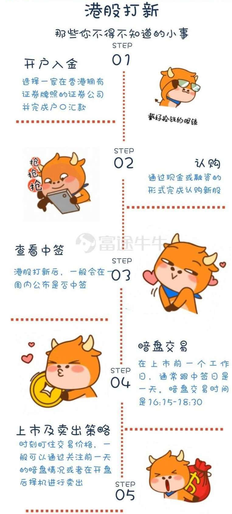
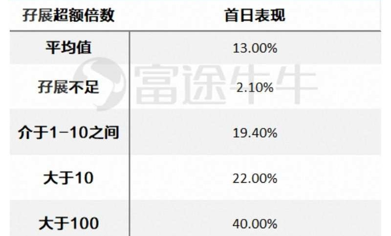

6.1.3.1. 打新秘籍 | 从申请认购到打新成功，你需要了解的有这些（流程）

6.1.3.1.1. 01.开户入金
首先就是选择一家正规持牌香港证券公司了， 由于目前国内并不能通过沪港通参与港股申购，要想参与港股打新必须选择一家在香港拥有证券牌照的证券公司，因为在打新的过程中还存在申购的费率，同时券商不一样，收费标准、孖展不同、暗盘情况以及客户体验也不一 样，下面将结合实际一一讲解各类券商的情况
- 港股老牌券商，如耀才等，香港本地券商发展业务的模式主要也是依赖经纪人，分散销售。各本地券商的佣金收费此前长期维持高位(一般略低于银行)。此外，老牌港股券商 开户手续还比较繁琐，一般还需进行现场见证，同时其手机客户端使用体验还有待进一步优化。
- 外资券商，外资券商在香港散户市场所占的份额并不算多，其中最大的辉立成立于新加坡，优势则是可以提供便利广泛的亚洲市场产品(比如其所在的新加坡股票)。但其官方网页和软件界面都是以英文为主，不符合内地投资者的阅读喜欢，操作上也不是很方便。
- 中资券商，国内主要的中资券商目前已经纷纷入驻香港开拓港股市场，如招商证券、 国泰君安等，截至目前至少已有30家以上中资券商在香港拥有子公司。中资券商开户流程相对复杂，而且费用相对稍高。
- 互联网券商，近年新兴的互联网券商是由内地民营资本组建，如富途证券。相比于传统券商，互联网券商的经营思维更接近于以用户为中心的模式，坚持去中介，自主交易。互联网券商开户流程比较简单，而且客户端体验比较好。
以去年 IPO 数量为例，平均每周发行新股4支，下半年估计每周新股发行接近5支，假设每只新股平均冻结资金为一周，考虑每只新股只申购1手，全部新股都申购的话需要 36445 = 18220港币。所以牛牛推荐投入本金大概1.5万到2万港币左右（*不靠谱，每只股票最低认购股数及金额不同，加上开户抽奖的奖励，入金至少20000港币，没有香港账户的话美元3000美金）。
6.1.3.1.2. 02.认购
一般公司正式公布招股书那天，投资者可以认购新股。通常，新股的认购期有三天至一周， 在此期间都可以填写认购申请。我们尽量选择在最后一个认购日再操作，因为这个时候认购的一些数据已经出来了，更容易判断这只票的认购热度（靠谱，虽然有时会提前结束，但是融资认购倍数（仔展倍数）是一个很有用的指标）。
在公司的招股书里，可以大概推算出这只新股大概的市值，根据历史数据，基本上市值小于5亿元的新股破发概率大；大于20亿港币的新股破发概率低。
小于5亿元，这类股票为小盘股，这种股票因为价格低、市值小容易被掌握资金者(如庄家) 操控上市的价格涨幅，若求稳健打新，就应该避免申购这类新股。
大于20亿港币，这类股票为大盘股，通常营业额高、体量越大的公司在上市时市值越高，这类公司通常已有稳健的营收以及成长率，市场基金乐于抬升。
除了现金打新外，还有一种方式叫做孖展打新。
孖展是margin的谐音，就是融资的意思。港股认购，如果现金不足以，可以借钱认购。经常涉及的概念是孖展超购倍数。这里的超购是指融资额超过公开发售集资额的倍数。
开始认购之后，我们就可以在富途牛牛等券商 APP上看到实时孖展情况，如果孖展倍数＜1, 代表目前孖展资金尚未达到上市预计发行的金额，如果最终认购不足，这只新股将会有很大的下跌风险。
如果孖展倍数越高，最后该新股的认购倍数一般也就越高，代表市场资金对该新股的兴趣越高，首日上涨的概率也高。
藉由孖展倍数，可判断新股是否受到市场资金的青睐。而从过去两年的数据分析来看，孖展超购倍数也的确与首日表现有一定的相关性

在孖展打新时，最后一个交易日认购还能少占用券商的资金，支付更少的融资费用，加上上述推荐的大部分券商平台均可接受融资打新服务，同时港股实施的是优先保证一户一签的分配政策，所以每只新股申购一手是性价比比较高的做法。
6.1.3.1.3. 03.查看中签
港股打新后，一般会在一周内公布是否中签， 中签情况可直接登陆富途牛牛等券商客户端进行查看，如果认购的人比较多，将通过抽签决 定股票的分配，其中一个重要的概念是一手中签率，即只申购一手的情况下，中签一手的概率。
港股为了照顾中小投资者，尽量保证一手中签率，让每个申购的人都尽量有一手。2018年港股 IPO 一手中签率高达61.3%。一般来说，新股质量越高，认购的人越多，中签率就会月低（大家都用另一个指标多少手稳中一手），首日表现越好，抽中赚钱的几率也就越高，但100%中签率的新股首日大涨的几率也相应存在
6.1.3.1.4. 04.暗盘交易
暗盘交易，就是不通过交易所系统，而是通过某些大型券商自行设立的内部系统进行报价撮合。港股新股暗盘交易时间一般为新股正式上市日前一个交易日下午4时15分至6时30分。
暗盘交易的好处在于，可以进行提前交易买卖。无论是用来提前锁定收益还是止损，亦或新股未中签想再次入场都可以用暗盘来达到投资目的。所以，最好选择有支持暗盘交易的券商。（看数据，对比下暗盘跟首日，得出个结论来）
一般来讲，暗盘的表现对新股上市首日的表现具有一定的指示作用。同向的概率很大。作为 投资者，一定要关注暗盘表现。
05.上市及卖出策略
港股新股，从申购到公布中签到上市，一般经历2周时间（美股短很多），一般上市首日涨幅最大，建议新股上市首日择机卖出，90%的港股新股在第一 天的价钱往往是最高的，赚钱的概率及安全性也是最高，所以与其承受风险，不如第一天就寻求合适的时机卖出，切忌恋战当成炒股。另外可参考暗盘涨幅的1.5~2倍卖出(此策略需同时参看新股的基本面)。
卖出价位我们可以设置相应的止盈区间，若是风险厌恶者可以选择在暗盘时就卖出，赚的概率大而且金额大，亏的概率小而且金额小。对于小白来说，总想追求卖在最高点，并不是一件好事且难以把握。
相对股市而言，港股打新的收益率还是比较乐观的。港股打新也是海外投资的第一步， 有了港股账户不但可以打新，还可以购买腾讯等优秀港股市场股票，迈向资产全球化配 置，早日实现财务自由。